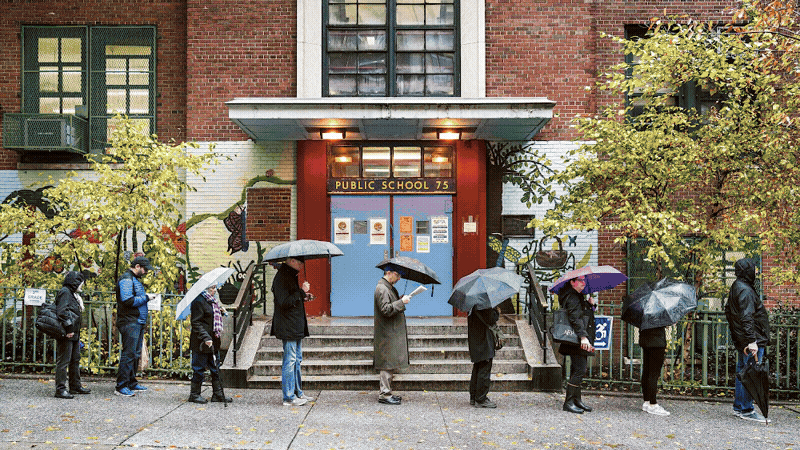

Post-earthquake Venezuela will still need medicine, supplies, knowledge, and freedom.
Here's what you can do — explore the four spaces of Post-earthquake Venezuela.
Post-earthquake Venezuela will still need:
Medicine, supplies, knowledge, freedom.
Click to reveal

Post-earthquake Venezuela will still need medicine, supplies, knowledge, and freedom.
Here's what you can do — explore the four spaces of Post-earthquake Venezuela.